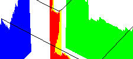
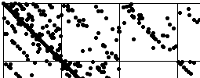

| Here we illustrate some ways in which the cartoon method
can generate convincing surrogates of the stock market. |
| In addition, we describe a rescaling
of time that disentangles the long tails and dependence properties of financial data. |
| Finaly, we
apply the method of driven IFS to
compare cartoon data and real data. |
|
The visual impact of differences vs. closing prices reveals
a reason that some less-successful financial models remain common. Plotting successive differences
makes much more visually apparent the presence of correlations and large jumps. |
 |
This point is illustrated by the pick the fake quiz. How
well will you do compared with the experts? (Hint: it won't be hard to do better.) |
|  |
Here we present a method for rescaling time,
absorbing the large jumps into the trading time, leaving visible the dependence of price
on time. |
|  |
Here we apply the method of driven IFS to study the patterns generated by
these cartoons of financial processes. Comparing these
Cartoon Driven IFS and data driven IFS
yields some interesting interpretations. |
|